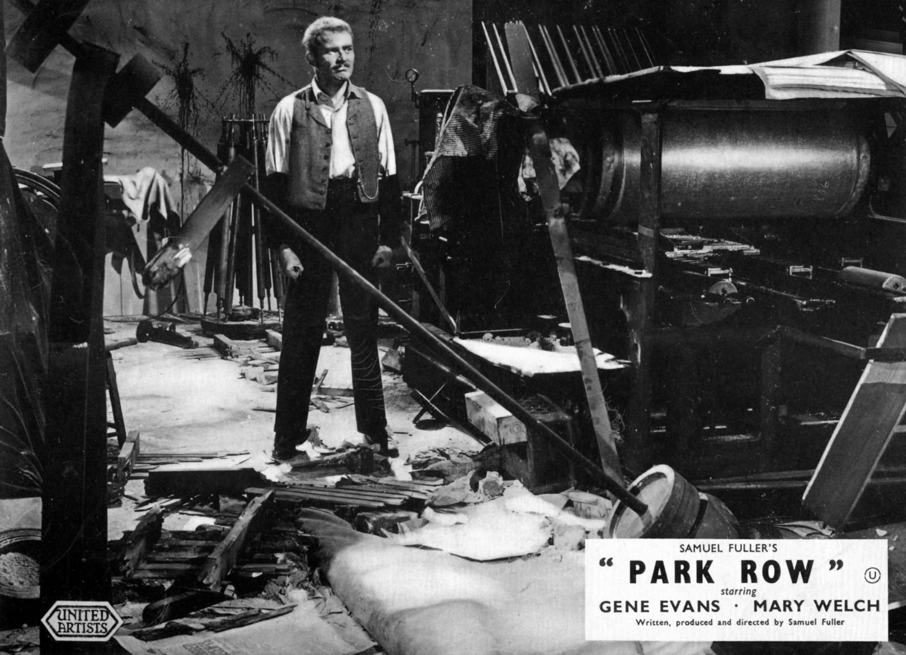
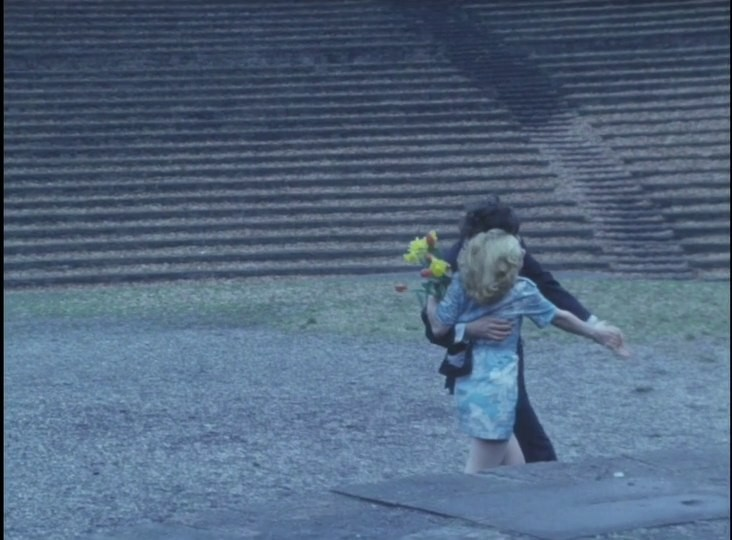
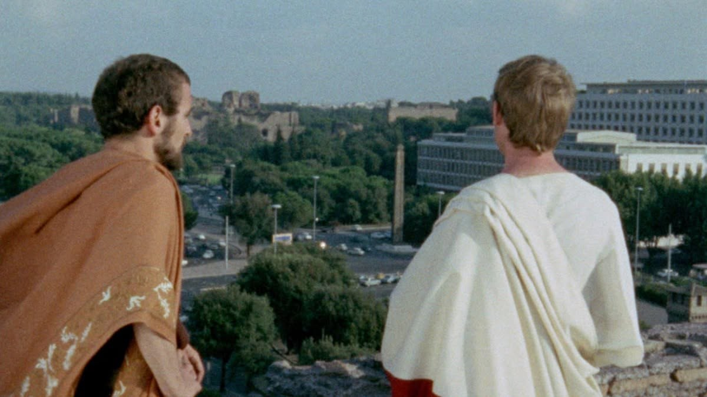
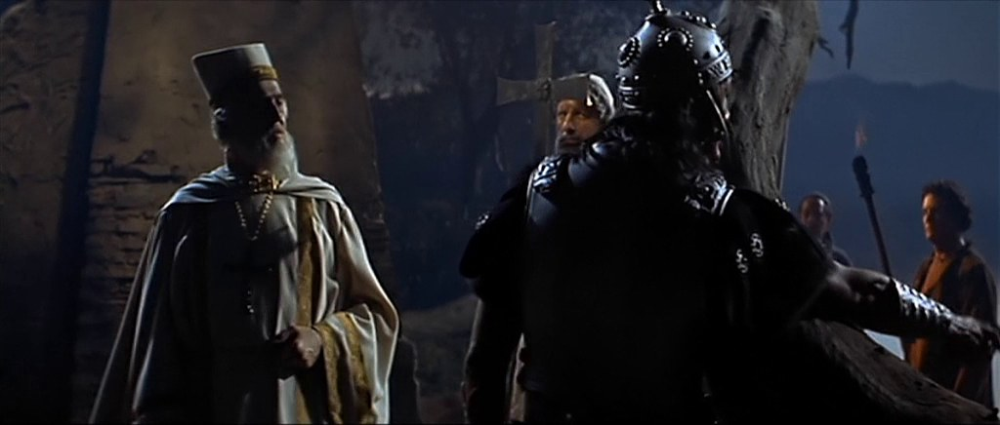
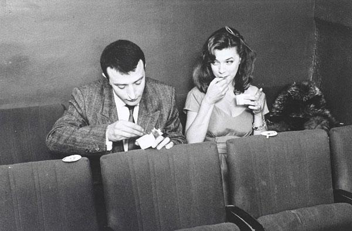
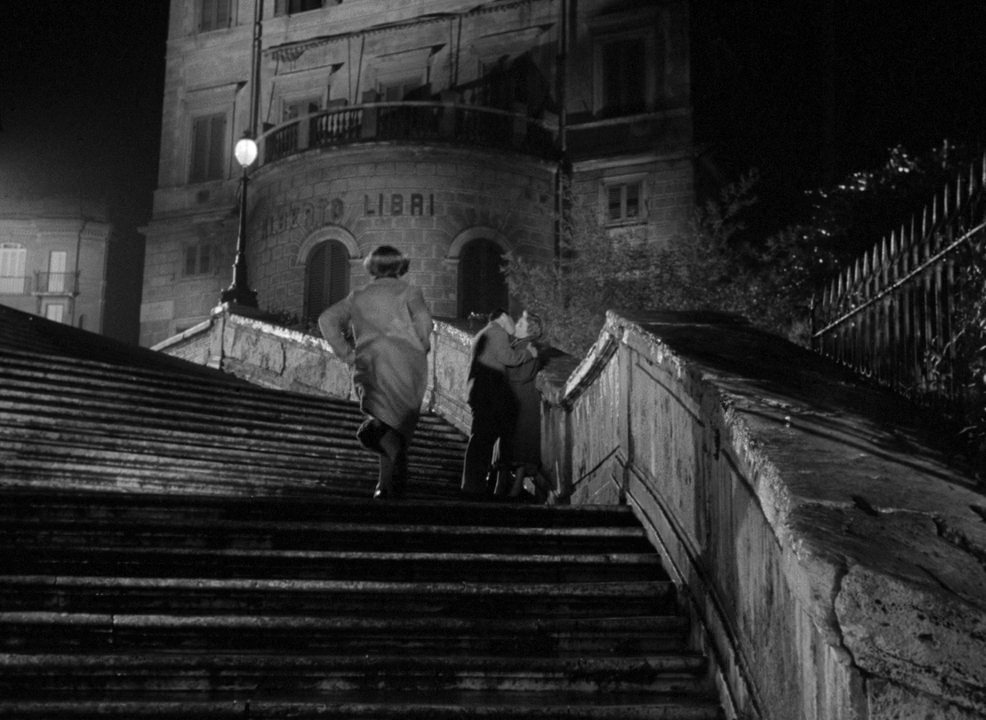
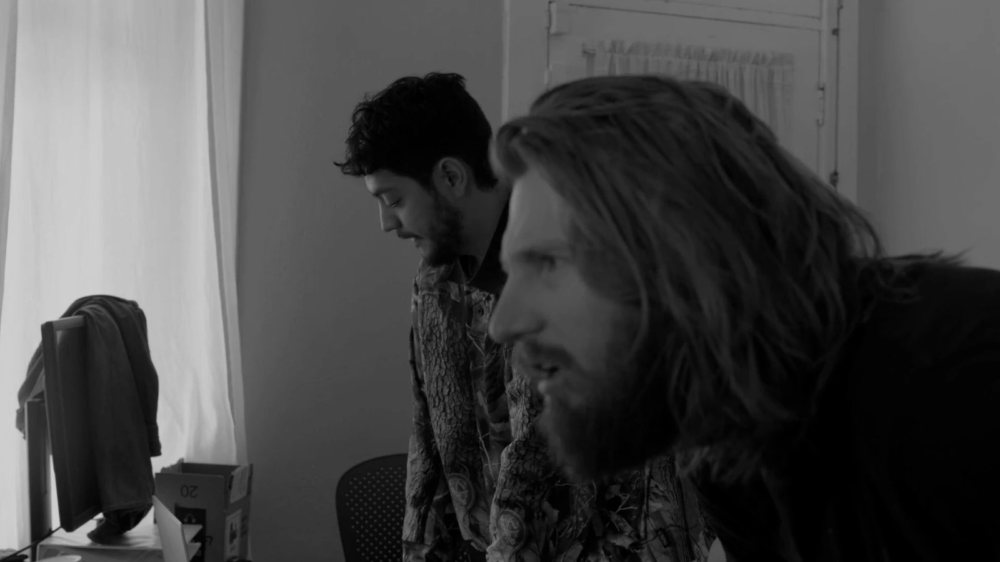
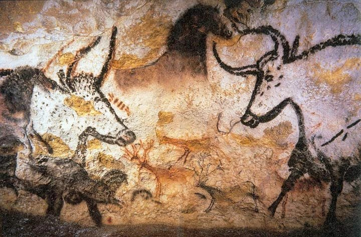

Park Row (1952) by Samuel Fuller
Beginnings rarely occur in high places. Oftentimes they start in the East River. Like Steve Brodie, the greatest directors cast their works into the maw of history; they survive, but only a few are there to record it. .....

Eika Katappa (1969) by Werner Schroeter
It is time we leave existentialism in the past. An idea that arose from a particularity of the past that we no longer have access to in our century’s excess. It may still “exist”, but there was a time when it wasn’t as childish as it has become. .....

Othon (1970) by Jean-Marie Straub and Danièle Huillet
Let us arrive too early, let us arrive too late… At least, let us arrive. Before speaking of the end, let us speak of the beginning. .....

Sign of the Pagan (1954) by Douglas Sirk
So many monstrosities have come out of a desire to, alone, re-animate the dead, bringing what has been put to rest back into the light, scalding the gods’ aged skin in violent solar exposure, when time had just begun to bathe them in an ever-expanding eternal shadow. Why then are we now encouraged to exhume corpses and embalm them all over again? .....

The Seats of Alcazar (1989) by Luc Moullet
Chaz Mullis, Zoey M. Hogan, Jean-Luc Jacques
Can we start by defining “modern filmmaking” and how it distances itself from the trends of the past? I think it would be easier to start there to better identify the shortcomings of a lot of new movies we see today. .....

A Free Woman (1954) by Vittorio Cottafavi
Form is whole. We begin here. If much of the current critical environs doubled-down on an assorted manicheism of theoretical fixtures—ranging from postist structuralist jouissances to rigor mortised axiomatics—what unfolds before us is the need to pencil out the know-how of a cinema that suffuses with life and beauty through its every part. .....

Nightgame (2026) by Parker Corey
Few films today fit the mold of what used to be called a city symphony, and even fewer would dare to extend what such a sub-genre would entail in today's world. .....

Lascaux painting, February 2006 — Prof saxx, Wikimedia Commons, CC BY-SA 3.0
The animal in Rilke dwells within space. Here I will designate the Open as a lived field, a world neither cut off from the being that moves through it, nor reduced to an object by a gaze that turns back upon itself. Humans, by contrast, are a reflection of the world; a world itself reversed by a monotheistic god who turns humanity back toward himself. .....